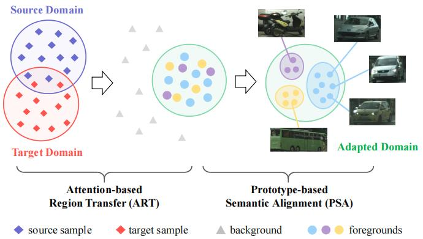
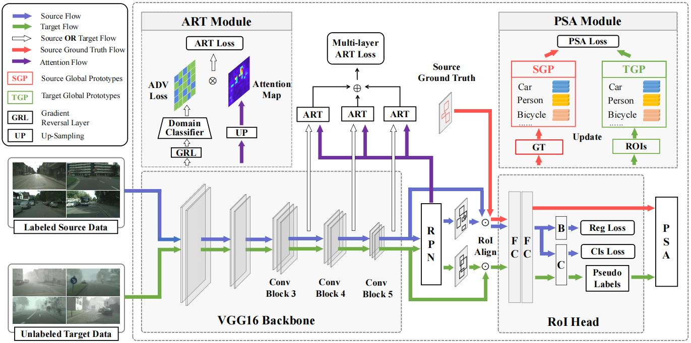
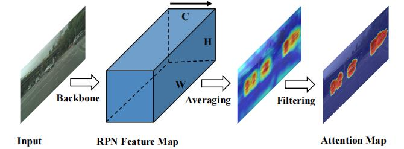
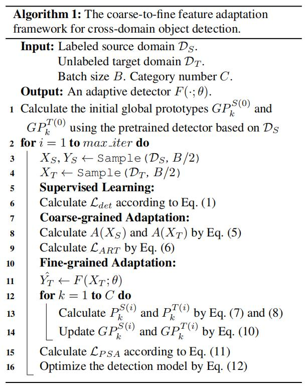
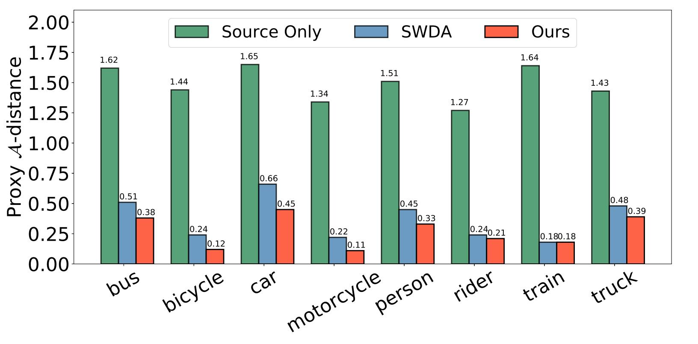
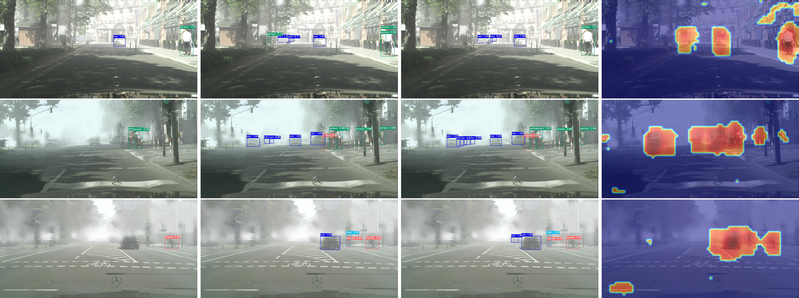
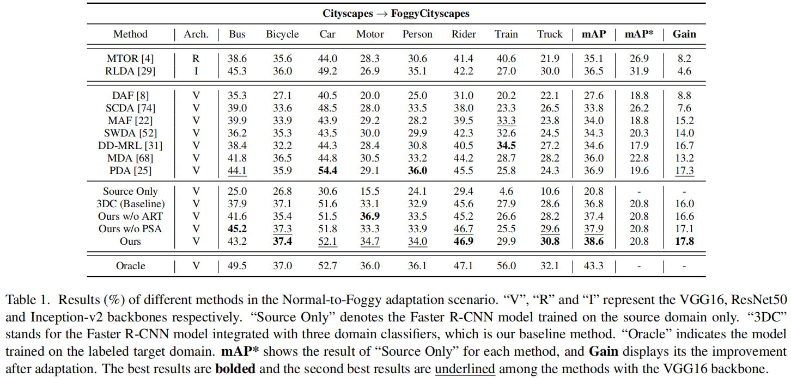

域适应目标检测：Coarse-to-Fine¶
综述¶
会议与时间：IEEE Conference on Computer Vision and Pattern Recognition 2020 (CVPR, 2020)
针对领域：域适应目标检测
在网上没有找到公开的源码，但是找到了别人写的源码笔记(代码是向论文作者要的)，可以参考下：博客链接
主要思想¶
现有的无监督领域适应方法(Unsupervised Domain Adaptation, UDA)对解决域适应问题具有较好的效果，通过将基本知识从现成的标记领域(源域)转移到相关但是模型没见过的未标记领域(目标域)，通过减少跨域差异来使模型生成具有领域不变性的特征表示，是解决数据领域偏移的有效措施。
相比于图像分类，目标检测中的域适应问题更加复杂，需要对图像中不同目标的所有实例进行定位和分析。在一张图片中，通常有多种类型的检测对象，并且每个对象都有自己的分布，但是现有的方法都忽略了这个关键信息，如：domain adaptive Faster R-CNN(论文笔记链接)、Strong-Weak feature adaptation(论文笔记链接)等等，他们都将不同对象的分布作为一个整体来进行模型自适应，没有考虑对象之间的分布差异。
本文中，作者针对上述问题提出了一个由粗到细的特征自适应框架。主要思想如下图所示，首先考虑到不同领域之间的前景要比背景共享更多的共同特征，因此提出了基于注意力的区域转换模块(Attention-based Region Transfer, ART)，以一种与类别无关的粗糙方式工作，来凸显前景信息的重要性，通过利用高级特征中的注意力机制来提取感兴趣的前景对象，之后在含有前景对象的特征数据中实现对齐，并且在多个卷积层之间应用对抗性学习，从而有效地提高模型的领域适应能力。其次，对象的类别信息可以进一步细化先前的特征适应，因此有必要让模型能够区分不同种类的前景对象，对每个类别执行不同的特征适应。但是如果直接为所有类别都训练一个域分类器的话，在训练过程中容易导致对象匹配错误(具体原因可见下文的分析)，为了解决这一问题，作者提出了一个基于原型的语义对齐模块来为跨域的每个类别构建全局原型，全局原型在每次迭代中自适应地更新，因此可以抑制错误标签预测以及错误类别匹配所带来的负面影响。

方法¶
参数定义¶
在跨域目标检测中，将给定标签的源域数据定义为\mathcal D_S=\{(x_i^s,y_i^s)\}^{N_s}_{i=1}，其中x_i^s和y_i^s=(b_i^s,c_i^s)依次表示为第i张图片和对应的标签，标签包含边界框信息b和类别标签c，将不含标签的目标域数据定义为\mathcal D_T=\{x_i^t\}^{N_t}_{i=1}，假设源域和目标域样本具有不同的数据分布(如：\mathcal D_S\neq\mathcal D_T)但是具有相同的物体检测类别，算法目标就是为了使用\mathcal D_S去提高在\mathcal D_T中的检测性能。
网络框架¶
网络框架如下图所示，该框架由一个目标检测网络和两个域适应模块构成：

目标检测网络：作者选取了Faster R-CNN模型来当做基础的检测模型，Faster R-CNN是一个二阶段目标检测器，主要由三个组件构成：①基础的特征提取网络G；②区域提议网络(Region Proposal Network, RPN)，用于预测对象的边界框和框内存在物体的概率；③感兴趣区域检测模块(Region-of-Interest, ROI)，用于进一步细化边界框的回归器B和物体分类器C，Faster R-CNN总损失可以表示为：
自适应模块：不同于现有在整个特征空间降低域偏移的研究，考虑到前景可以共享更多的跨域信息，作者设计了基于注意力的区域转换模块(ART)；并且还考虑到类别信息有助于域适应任务，通过突出每个类别的分布可以进一步细化特征的对齐，因此作者又设计了基于原型的语义对齐模块(PSA)，两个模块相结合可以实现前景信息由粗到细的知识迁移。
基于注意力的区域转换¶
ART模块用于提高网络对前景区域内跨域分布的关注力度，主要由两部分组成：领域分类器和注意力机制。
为了对齐跨域的特征分布，作者将三个域分类器D分别嵌入到特征提取网络G中后三个阶段的卷积模块，与之前的研究工作一样，域分类器D尝试区分领域特征，同时特征提取网络G尝试混淆域分类器的判断。实施过程中，G和D通过梯度反转层( Gradient Reverse Layer, GRL)连接，使流经G的梯度反转，当训练过程收敛时，G趋向于提取域不变的特征表示。形式上，第l个卷积模块中的对抗性学习目标可以表示为：
目标检测任务通常需要定位和分类对象，因此感兴趣的前景区域信息通常要比背景信息重要，但是如果域分类器在没有聚焦的情况下对齐整个图片所有空间位置的特征，可能会降低模型自适应的性能。为了解决这一问题，可以利用注意力机制来实现前景感知的分布对齐，在Faster R-CNN中，RPN模块就充当注意力的作用，他告诉检测模应该往哪里看，因此自然就想到利用RPN模块中的高水平特征生成注意力图。如下图所示，给定一张来自任意域的图片x，将RPN模块卷积层输出的特征表示为F_{rpn}(x)\in\mathbb R^{H\times W\times C}，其中H\times W和C分别表示特征图的空间维度和通道数。之后再通过在通道维度上对激活值做一个平均操作，来构建空间注意力图。最后在计算一个阈值，将空间注意力图上小于阈值的数据过滤掉(设置为零)，因为他们更可能属于背景区域。

最终注意力图A(x)\in\mathbb R^{H\times W}的计算公式如下：
由于得到的注意力图与不同的卷积块中的特征数据尺寸不兼容，即特征图尺寸有可能比注意力图尺寸大，因此作者采用双线性插值对注意力图进行上采样操作，为每个卷积块产生一个对应的注意力图。由于注意力图可能不是那么准确，如果前景区域被误认为是背景，其注意力权重被设置为零，并不能有助于模型的自适应。作者受残差注意力网络的启发(论文链接)，在注意力图中引入了跳跃连接以增强其性能。
ART模块的学习目标可以表示为：
基于原型的语义对齐¶
因为来自RPN模块的注意力图不携带关于类别的信息，因此ART模块以类别未知的方式对齐前景的特征分布。为了实现类感知语义对齐，一个简单的方法就是为每个类别训练领域分类器。然后，直接这样做的话会有两个缺点：①训练多个类别特定的分类器是低效的；②如果目标域中出现错误的预测信息(如背景或者分类错误的前景)，可能会影响到后续语义对齐的性能。
受到少样本学习中的基于原型网络的方法的启发(论文链接)，作者提出了PSA模块来解决上述问题。预制件训练域分类器不同，PSA尝试跨域最小化具有相同类别的一对原型(P^S_k,P_k^T)，从而保存特征空间中的语义一致性，形式上，原型可以表示为：
注：这里相当于利用边界框，将每一类物体前景的特征数据提取出来，之后求一个平均值作为该类的原型，作为类别特征的平均值，原型可以很好的反应每一类整体的特征情况。源域数据由于有标准的边界框(即标签)，因此可以利用标准边界框对目标特征做裁剪，求平均之后得到标准的类别特征，目标域数据缺少边界框标签，因此只能利用检测模型得到的目标特征来求类别原型，由于是模型预测得到的，因此称为伪标签。
使用原型具有两个好处：①原型不需要额外的训练参数，并且计算量小；②当生成原型时，错误的伪标签产生的负影响可以被数量较大的正确伪标签所抑制。需注意的是，上面的原型是建立在所有样本之上的，训练过程中，目标检测任务的batch的尺寸通常很小，同一批次源域图像和目标域图像的前景对象可能具有不一致的类别，在一个批次中对齐当前批次的所有类别可能不太合适。举例来说：随机选择两幅图像(每个领域一张)进行训练，但是”汽车”这一对象仅出现在源域图像中，目标域图像未出现车，因此在这一批次中无法跨域对齐汽车原型。
为了解决这一问题，作者动态地维护全局原型，在每个小批量中由本地原型自适应地进行更新，这种更新与优化器中的动量更新类似：
最后，通过最小化源域全局原型GP_k^S和目标域全局原型GP^T_k之间的L_2距离来实现语义的对齐。PSA模块第i次迭代的优化目标可以表示为：
网络的优化¶
该算法框架的训练过程主要集成了三个组件，具体可见如下流程图所示：

- 监督学习(Supervised Learning)：用于监督目标检测损失\mathcal L_{det}，仅用于带有标签的源域数据\mathcal D_S。
- 由粗到细的自适应(Coarse-grained Adaptation)：使用注意力机制去提取图片中的前景信息，之后通过优化\mathcal L_{ART}来使模型聚焦于对齐这些区域的特征。
- 细粒度自适应(Fine-grained Adaptation)：首先，在目标域中预测伪标签，之后进一步自适应地更新每个类别的全局原型，最后通过优化\mathcal L_{PSA}来实现前景对象的语义对齐。
总的优化目标为：
实验¶
可视化分析¶
为了进一步说明该方法的先进性，作者将该算法与不加自适应的目标检测算法和Strong-Weak feature adaptation(SWDA)算法做了对比，所面向的任务均是由清晰域到模糊域的适应(即晴天到雾天)。
前景特征分布差异：论文《Analysis of Representations for Domain Adaptation》中表明\mathcal A-distance可以作为区域差异的度量(具体衡量方法可以去参考一下原文，论文链接)，因此作者计算了三种算法中多个类别领域间的分布差异，结果如下图所示：

从图中可以发现，与未进行领域适应的模型相比，引入了自适应模块的两个算法大大缩减了领域差异，这证明了域适应的必要性。此外，由于作者利用PSA模块显式优化了每个类别的原型，因此最终模型在每个类别上获得了更小的前景分布差异。
可视化检测结果：作者为三个模型可视化了检测结果，并且还可视化了注意力图的关注区域，具体如下图所示：

上图从左到右依次为未引进域适应模块的检测结果、SWDA检测结果、本算法检测结果以及注意力图的可视化结果。从图中可以发现，未引进域适应模块的算法仅能检测出一些显著的物体，对比作者设计的算法与SWDA可以发现，该算法可以更准确地从浓雾中检测物体，例如第三列相比于第二列能够检测得到更多的汽车。
mAP对比¶
Cityscape \rightarrow FoggyCityscape

总结¶
本文提出了一种由粗到细的特征自适应算法来解决跨域目标检测问题，该算法主要有两个模块构成——ART和PSA，前者利用注意力机制以类别不可知的方式构造前景区域，并且在领域特征对齐时突出前景区域的重要性，后者利用原型在语义层面(即结合了类别信息)对前景进行细粒度的调整。
注：以上仅内容是笔者的个人见解，若有错误，欢迎大家批评指正。
最后一次修改日期：2022年1月30日